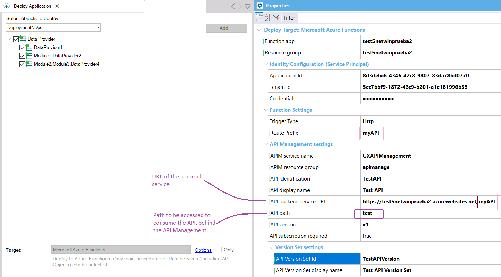
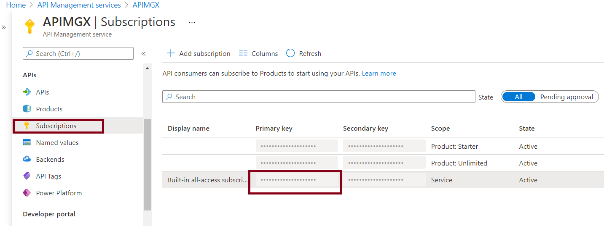

They are Http Functions. The HTTP trigger lets you invoke a function with an HTTP request. You can use an HTTP trigger to build serverless APIs.
Summary
For deploying rest services as Http Azure functions, select the "Microsoft Azure Functions" deployment target.
You can add these types of objects to the Deployment Unit object:
For deploying the backend services of a mobile app (or Angular) as Http Azure functions, add the main objects of the app to the Deployment Unit object and select the "Microsoft Azure serverless (backend services)" deployment target.
All the objects of the Deployment unit must have Generate OpenAPI interface property set to Yes. Alternatevely, set to Yes the property at the generator level, and do a rebuild all.
We recommend reading this first: Deploy to Azure Functions.
The Trigger Type property at the deployment unit should be "Http."
It is optional to deploy in API Management (APIM) as well.
If you deploy to APIM, first you have to configure the following:
- APIM service name: Name of the API Management service instance.
- APIM resource group: Azure API Management resource group.
- API Identification: API revision identifier. It must be unique in the current API Management service instance.
- API display name: Display name of this API.
- API backend service URL: Absolute URL of the backend service implementing this API. You should take this value from the settings of the Function App where you deployed the application, concatenated with the value of the Route Prefix property.
- API path: Relative URL uniquely identifying this API and all of its resource paths within the API Management service instance.
- API subscription required (*): If true, the API requires a subscription key on requests. When virtualizing your APIs behind an Azure API Management (APIM) service, you may need to provide the subscription key in your calls. Typically, this is done via the header key Ocp-Apim-Subscription-Key. Your subscription key is always linked to an APIM product. See the documentation of Azure about Subscriptions.
- API Version: Describes the Version of the API. If you add a version to a non-versioned API, an Original version will be automatically created and will respond on the default URL. The versioning scheme used is Path based ("Segment"). See versions in APIM.
- API Version Set Id: A resource identifier for the related API Version Set. If an existing API Version Set Id is configured and an API Version display name is not indicated, then the version is updated in that version set.
- API Version Display Name: Name of API Version Set.

(*) In order to get the Subscription Key to consume the API, go through the Subscriptions option as shown below:

See Deploy mobile services to Azure Serverless using API Management.
Since GeneXus 17 Upgrade 6.
The API objects can be deployed to APIM since GeneXus 17 upgrade 7.
Azure Functions